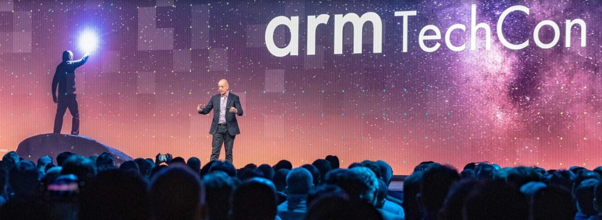

History
The TechCon conference has been run by different groups during its history. Previously it was organised as part of the UK Radio Festival, under The Radio Academy. Since 2016 it has been run independently by TBC Media Ltd. due to limited resources at The Radio Academy TBC Media Ltd. is run by Ann Charles and Aradhna Tayal, who are former committee members of TechCon from its Radio Festival days. TBC Media Ltd. exists to support the UK radio and audio industry by running events to support the technical community, most notably Radio TechCon.
